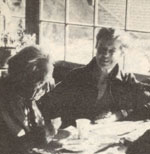

As we've noted several times in these pages, Helen and Scott Nearing are light years ahead of most of us when it comes to getting back to the land and living a life of voluntary simplicity. As well they should be, since they originally homesteaded a run-down farm in Vermont's Green Mountains away back in the autumn of 1932.
Life was good for the Nearings on that mini-farm . . . until the slopes around them exploded into ski resorts in the early 50's, forcing Helen and Scott to move on to a rocky inlet on the coast of Maine and start all over again.
And that's where you'll find the Nearings today: still clearing brush, still building honest stone houses (Helen and Scott are famous for their stone houses), and still raising most of their vegetarian diet themselves in unbelievably Productive wholistic gardens . . . just as they've been doing for nearly 50 years.
Naturally (in more ways than one), the Nearings hare learned a few things about homesteading and getting back to basics over the years. And, lucky for all of us, they've agreed to share some of that knowledge with MOTHER's readers in a regular question and answer column. If you'd like to get in on the action, send your question or questions about self-sufficient living on the land to Helen and Scott Nearing, THE Mother Earth News"', P.O. Box 70, Hendersonaille, N.C. 28791. And Please don't expect personal replies to your queries. The most important and most frequently asked questions will be answered here-and here only-where we all can read what the Nearings have to say.
I have a root cellar and use it to store apples, turnips, potatoes, and onions. However, although my food room seems to stay dry, I feel that an unacceptable percentage of the put-up produce rots before I can use it. Have you had any experience with root cellaring that might help me figure out what my problem could be?
Our root cellar is directly underneath the kitchen. It's lined with cement, and has drains built into its floor. We store apples, rutabagas, potatoes, carrots, onions, and turnips in wooden crates, in boxes, or in baskets . . . and put dry autumn leaves between the layers of produce. Using this technique, we've been able to keep spoilage down. However, when food is stored in such a manner, it's best to go through the boxes every month or two ... to eliminate any fruits or vegetables that show signs of spoiling, before they can "contaminate" their neighbors.
Do you believe in the possibility of a worldwide utopia?
The term "utopia"-as it's ordinarily used-refers to a form of social organization which is flawless and, therefore, cannot be improved upon. We don't believe in such a thing. We do, however, have definite ideas with regard to a workable, worldwide society that supersedes nationalism.
Scott has elaborated on the subject of "worldism" in his book United World, published in 1945. We still have some paperbound copies of the volume, which can be purchased-for $2.50-from the Social Science Institute, Dept. TMEN, Harborside, Maine 04642. The same subject is approached in a different manner in Scott's latest book, Civilization and Beyond, which costs $4.50 from the same address. (Please enclose 50$ postage per book.)
I'm interested in any comments either of you may have on the personal commitment of marriage. I've been married almost 14 years now, and I'm still occasionally in wonder at the dynamics of the relationship.
No marriage is perfect, but some are better than others. We've been living to gether for close to half a century, and while we have quite different characters and interests, as well as different ideas on many subjects, we still get along and still are together.
We believe that sharing interests is essential for close comradeship. Walter Lippman has said, in A Preface to Morals, "The emotion of love, in spite of the romantics, is not self-sustaining; it endures only when the lovers love many things together, and not merely each other."
It was a pleasure seeing you at the First Homesteaders Festival in 1978, and we'd like to see you again. Will you be making some public appearances this summer?
We enjoyed the First Homesteaders Festival held in 1978 near Elmira, New York. A young couple, Sherrie and Norm Lee, are holding the Fourth Annual Festival at their homestead during the weekend of July 23-25 this year. Write to them for information (at Dept. TMEN, RR 2, Box 151, Addison, New York 14801 . . . enclosing 20 cents for mailing costs) if you're interested in attending or in receiving a sample copy of their Homesteaders News.
We, however, have said "no" to all "appearances" this year (after all, with 175 combined years of joint activity behind us, we feel entitled to a rest), but we've added that "maybe we'll drop in" to Sherrie and Norm's affair and/or to the Bread and Puppet Circus in Glover, Vermont on August 15 and 16, 1981.
My grandmother, who was a good "natural foods" cook, died when my grandfather was 70 years old. At that time, he looked like a man of 60. Now, five years later, he looks to be 100! I'm sure he's suffering from malnutrition, due to a diet of medicine and the poor food frequently served in hospitals and nursing homes. But how do you tell a 75-year-old man that he has to change his ways and listen more to himself than to his doctors?
At 75, your grandfather should be mature enough to know how to take care of himself . . . unless his wife babied him through the years. If so, it's partly her fault for not having educated him in good nutrition or let him do his share.
Tell him to eat as much raw food as he can chew. Make sure that half of his diet is composed of uncooked edibles, and have him eat such foods first . . . before he fills up with the heavier, prepared part of the meal. Suggest that he have fruit for breakfast and lunch, and a big salad first thing for supper. If the hospital or nursing home won't furnish these, he should provide them himself (or perhaps you could go shopping for him):
It would be difficult for Scott, in his nineties, to get along without a helping hand from Helen . . . and it would not be easy for her, in her seventies, to get by without him. We plan to preserve good health as long as possible, and-if we're lucky-to go together.
Can you tell me what mulch materials you've had the most success with?
Most of our mulching is done with autumn leaves, spoiled hay, and seaweed. Good mulch, as you may know, must be both loose and light.
We don't mulch open areas in our fall garden until a good frost has crusted the ground. This practice, we feel, prevents slugs and mice from using our plant protection as a comfortable winter hiding place!
I'm very interested in your "anti-cooking" book. Is it available yet? And, if so, how can I get a copy?
Send a stamped, addressed envelope to the Social Science Institute (at the address already given) for details.
I've just finished reading Continuing the Good Life and found it very intellectually nourishing. I was, however, uncertain as to the meaning of the phrases at the top of page 184: ". . . only many lives ahead will give us time . . . to fulfill all we hope to do." Is this a reference to reincarnation?
The passage was not intended as a reference to reincarnation so much as to the continuity of life. Without going into the question of whether reincarnation does occur (there has been much evidence indicating so, and little supporting the belief that it does not), we take it for granted that something of the beings which we are survives death, and goes on with whatever may lie ahead.
|
 |
|
|